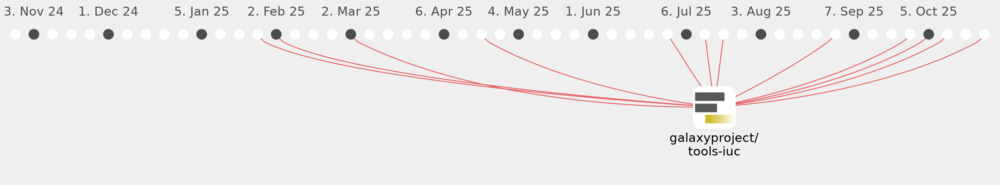

bedroesb

Commits all-time: 170
Commits last year: 47

(47)
- f3b15f1
- 7e7d7b8
- 877af8a
- 65c954d
- 0924b81
- e99f648
- 5310c15
- d2fcdc2
- 1f910da
- b7c2719
- b79853f
- c6dd203
- cf8b5bd
- 9d75153
- ae6c0b1
- 0775b1a
- a322b74
- 0c0f307
- d50d0e9
- e23678b
- e04a136
- 4cbc6f2
- 9e2b677
- 5214d3c
- e663015
- 4833e0b
- d5d2a38
- 41cb60a
- 1376d9a
- cd54bcd
- 587854e
- 5e67915
- 33cf6cc
- 6dd9956
- fec9840
- 68bff3c
- a8110f9
- cf39a03
- 6e43f63
- 78318c8
- 842ef96
- b61354e
- 6697cbe
- 7934bdf
- 6bf8d01
- b956b39
- c9ba7a3